Ⅰ 本课目标Objectives
- 01用 AUTO 模式完成对焦、拍摄与回放，认全对焦框与对焦指示的四种状态
- 02用 DISP/BACK 与对焦棒调出直方图、高光警告与照片信息（风光看曝光的核心操作）
- 03会用回放变焦、多幅画面、删除、保护与播放菜单的常用项
- 04用三种入口各录一段视频，并会回放、暂停与调音量
- 机身 X-S20
- 装有照片的存储卡
- 一支带变焦环的镜头
- （可选）HDMI 线
Ⅱ 拍摄第一张照片First Shot
AUTO 档对拍摄过索尼、佳能的你来说只是「走一遍流程」，重点不是学会拍照，而是认全富士的对焦反馈——后面的课全都建立在「看懂对焦框在告诉你什么」这件事上。
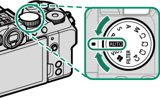
AUTO 档下相机自动检测拍摄对象、选择场景模式，并连续调整对焦、持续搜索眼睛——所以你会听到镜头对焦的声音，电池也比平时耗得快。这是正常现象，不是故障。
附 对焦反馈的四种状态
| 屏幕上看到 | 含义 | 该怎么办 |
|---|---|---|
| 对焦框 + 对焦指示点亮绿色 | 已合焦 | 直接全按快门 |
| 对焦框变红、出现 s、对焦指示闪烁白色 | 没有合焦 | 换对焦点、拉远距离或补光 |
| AF 辅助灯点亮 | 光线不足，相机自动补光辅助对焦 | 正常现象，注意别挡住灯 |
| 画面整体偏暗、快门拖长 | 环境太暗 | 加光或上三脚架（第 3 课解决） |
AUTO 档的一个盲点
AUTO 的「场景 + 对象检测」由相机判断，判断错了你也看不出提示。所以风光、人像这类你本来就清楚的题材，尽早离开 AUTO——第 3 课开始就用 A / S / M 自己控制。
Ⅲ 回放显示：直方图与高光警告Playback Display
回放时按 DISP/BACK 循环切换显示模式，按对焦棒向上循环切换照片信息。这两个按键就是风光拍完现场验片的全部工具。
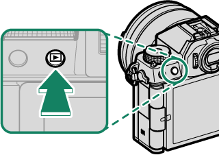
附 DISP/BACK 的四种显示
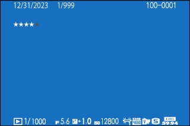
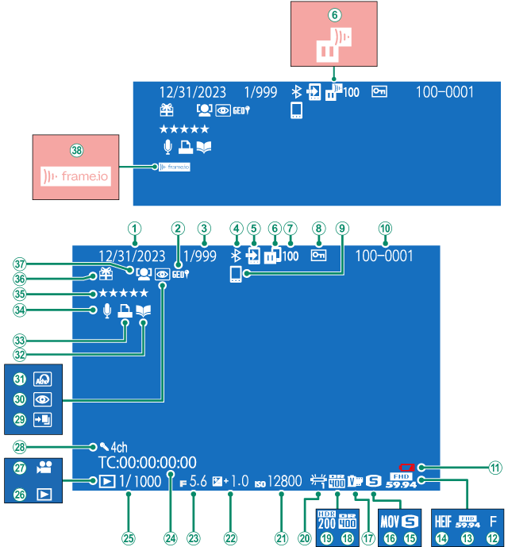
在「信息显示」下，每向上按一次对焦棒，照片信息就换一档。风光验片主要看两档：直方图与高光/阴影警告。
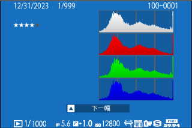
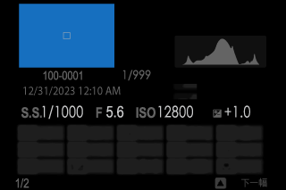
| 看到的现象 | 说明 | 风光场景的处置 |
|---|---|---|
| 直方图右端堆积并顶到边框、画面高光处闪烁 | 高光溢出，细节已经丢了 | 降低曝光补偿 −1/3 ~ −1 EV 重拍 |
| 直方图左端堆积顶边 | 阴影压死 | 开启动态范围 DR200/DR400（第 6 课） |
| 直方图整体挤在中间偏左、右端大片空白 | 曝光偏保守，还有亮度余量 | 可 +1/3 ~ +2/3 EV 让画面更通透 |
为什么风光要「向右曝光」
数码传感器的暗部噪点远多于高光——在不溢出的前提下尽量把直方图推向右侧，后期拉回暗部时噪点更少。这就是你以前在索尼上熟悉的那套逻辑，富士只是把它放在对焦棒向上这个动作后面。
还有一个验焦动作：把对焦棒按下（中央），照片会放大到对焦点位置；再次按下返回。
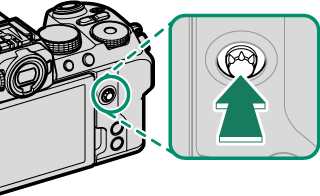
附 回放画面上的常用指示
| 指示 | 含义 |
|---|---|
| 画面编号 / 日期时间 | 文件序号、拍摄时间 |
| 图像质量 · 图像尺寸 · 文件格式 | FINE/NORMAL、L/M/S、JPEG/HEIF/RAW |
| 胶片模拟 · 动态范围 · 白平衡 | 当时使用的色彩与宽容度设定 |
| 感光度 · 快门速度 · 光圈 · 曝光补偿 | 完整曝光参数 |
| 受保护图像 · 评级星号 | 已锁定不可删 / 已打分 |
| 动画图标 · 四通道音频 · HDR | 该文件是视频 / 4 声道音频 / HDR 合成 |
| 礼物图像 | 由其他相机拍摄，可能显示异常、不能变焦 |
Ⅳ 查看照片进阶：变焦与多幅Zoom & Grid
全画面回放时，后指令拨盘是唯一的枢纽：向左转进入多幅画面，向右转进入回放变焦。DISP/BACK 或 MENU/OK 随时退回全画面。
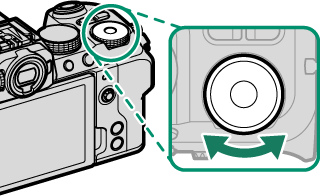
| 操作 | 结果 |
|---|---|
| 后指令拨盘向右转 | 中等变焦 → 最大变焦（倍率受「图像尺寸」限制） |
| 后指令拨盘向左转 | 全画面 → 9 幅画面 → 100 幅画面 |
| 变焦时按对焦棒 | 移动查看画面中当前看不到的区域 |
| 多幅画面时按对焦棒 | 移动高亮框；按 MENU/OK 全画面查看选中的那张 |
| 多幅画面时上下按对焦棒 | 翻到下一屏照片 |
| DISP/BACK 或 MENU/OK | 退回全画面回放 |
想在大屏上看，可用第三方 HDMI 线把相机接到电视：关闭相机 → 插入 HDMI 微型连接插孔（D 型）→ 开机。回放时相机屏幕会关闭，照片与视频输出到电视。线长不要超过 1.5 m。
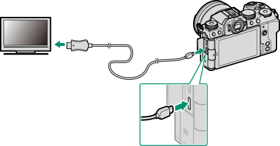
Ⅴ 删除与保护Delete & Protect
删除有两条路径，效果一样但节奏不同：回放中直接按删除按钮最快；播放菜单 > 删除能一次删多张或整卡。
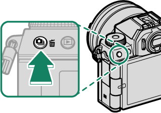
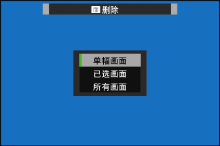
| 方式 | 怎么做 | 注意 |
|---|---|---|
| 单幅画面（快捷） | 全画面回放 → 按删除按钮 → 选「单幅画面」→ 左右翻到目标 → 按 MENU/OK 删掉 | 不弹确认框，按下去就删；可连续删 |
| 已选画面 | 播放菜单 → 删除 → 已选画面 → 逐张按 MENU/OK 打勾 → DISP/BACK → 执行 | 适合拍完一趟回来批量清片 |
| 所有画面 | 播放菜单 → 删除 → 所有画面 → 执行 | 只删未受保护的照片 |
删之前先保护
已删除的照片无法恢复。重要片子在现场就做「播放菜单 > 保护」，受保护的照片删不掉，也不会被格式化清掉以外的操作影响。注意：格式化存储卡时，受保护的照片同样会被删除。
Ⅵ 播放菜单：13 个入口Playback Menu
回放状态下按 MENU/OK 即进入播放菜单。它不光是「删照片」，还承担了机内 RAW 转换和传手机这两个外拍高频动作。
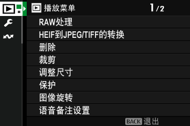
| 菜单项 | 作用 | 什么时候用 |
|---|---|---|
| RAW 处理 | 机内把 RAW 转成 JPEG/TIFF，可调 20 多项参数 | 外拍没带电脑，先出一版可用图 |
| HEIF 到 JPEG/TIFF 的转换 | HEIF 转 JPEG / TIFF 8bit / TIFF 16bit | 照片选了 HEIF 但对方要 JPEG |
| 删除 | 单幅 / 已选 / 所有画面 | 清片 |
| 裁剪 | 机内裁切，纵横比固定 3:2 | 构图微调、二次构图 |
| 调整尺寸 | 生成小尺寸副本 | 发朋友圈、发微信 |
| 保护 | 画面设定/解除、保护所有、重设所有 | 保护精选片 |
| 图像旋转 | 把竖构图转正（需先开「屏幕设置 > 自动旋转回放」） | 竖拍风光、人像 |
| 语音备注设置 | 按住 AFON 录音，最长 30 秒 | 给照片录口述备注 |
| 评级 | 0–5 星打分 | 现场筛片，后期按星级挑 |
| 将图像传输到智能手机 | 标记照片，蓝牙/Wi-Fi 传手机 | 外拍即时分享（第 8 课细讲） |
| 幻灯片式播放 | 自动轮播 | 给同行的人看片 |
| 照相簿助手 | 机内做相册 | 整理成册 |
| 打印预约（DPOF） | 标记要打印的张数与份数 | 送店冲印 |
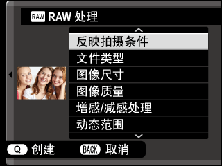
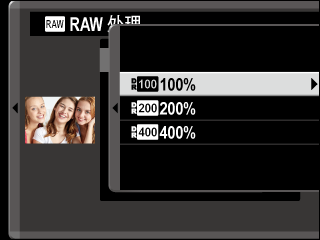
RAW 处理流程（外拍最实用的一招）
- 显示 RAW 照片 → 播放菜单 RAW 处理 → MENU/OK 打开设定列表。
- 用对焦棒上下选项目、按右键进选项、MENU/OK 确认，逐项改（胶片模拟、曝光、白平衡、DR、锐度……）。
- 按 Q 看副本预览 → 按 MENU/OK 保存为新文件。原 RAW 不受影响。
- 回放中显示 RAW 时直接按 Q，也能直接跳进 RAW 处理。
Ⅶ 录制与回放视频Record & Play
X-S20 有三个录制入口：随手按动画录制按钮、模式拨盘转到动画档、以及专为 Vlog 优化的 Vlog 档。三者互不干扰，设定分开存储——这点和索尼的「照片/视频两套参数」思路一致。
| 入口 | 怎么录 | 适用 |
|---|---|---|
| 动画录制按钮（t） | 静态摄影模式下直接按 t 开始/停止 | 拍照片途中随手来一段 |
| 模式拨盘 → F（动画） | 用快门按钮开始/停止 | 需要完整控制视频设定 |
| 模式拨盘 → Vlog | 用快门按钮开始/停止；设定用触控调整 | 手持自拍、边走边讲 |
无论哪种入口：录制中屏幕显示红色录制指示（V），屏幕边框变红（高速录制时变绿）；剩余时间倒计数、录制时间正计数。再次按下同一按钮结束。达到最大时长或卡满时自动停止。
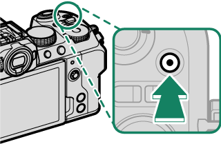
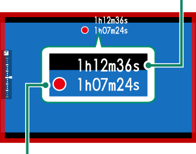
Vlog 档是这一课唯一需要额外记的：屏幕上有三个触控按钮——h 设定、i 返回、j 看片。其中两个开关对拍 Vlog 特别有用：
- 背景散景模式 = 开：光圈固定在最大（更虚）
- 产品优先模式 = 开：对焦锁定前景物体，适合测评
附 回放视频：对焦棒的五个动作
| 操作 | 回放中 | 暂停时 |
|---|---|---|
| 向下按对焦棒 | 暂停 | 开始/恢复播放 |
| 向上按对焦棒 | — | 查看照片信息 |
| 左右按对焦棒 | 调回放速度（箭头越多越快） | 单帧后退/前进 |
| 按 MENU/OK | 暂停并显示音量控制 | 恢复播放 |
| 暂停时上下按对焦棒 | — | 调音量 |
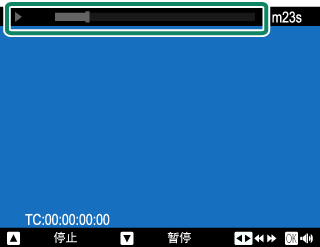
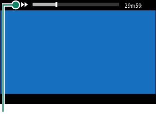
回放列表里，视频文件的缩略图上带 W 图标；选中后向下按对焦棒开始播放。Vlog 档下则轻触 j 直接看最近一条。回放时切勿遮挡扬声器；想用电视喇叭出声，只能调电视音量——相机的音量控制管不到 HDMI 输出。
录视频时容易被忽略的三件事
- 用 t 按钮在照片模式下录视频时，对焦模式会被自动切换为 AF-C（连续自动对焦）。
- 录制中不要遮挡麦克风，镜头对焦声也会被录进去。
- 画面里有极亮光源时出现竖/横条纹是正常现象，不是故障。
Ⅷ 迁移提示From Sony / Canon
回放与视频，和索尼 / 佳能最不一样的 4 点
- DISP/BACK 管回放显示，对焦棒向上管照片信息：索尼是单一 DISP 循环到底；富士把「显示模式」和「信息页」拆成两个动作，验片时要配合用。
- 后指令拨盘是回放枢纽：左转多幅、右转变焦。索尼是拨轮缩放、佳能是放大键；富士没有独立的放大键，全靠拨盘。
- 删除不弹确认框：回放中按删除按钮选「单幅画面」后，MENU/OK 按下即删。这点比索尼激进，误删风险更高，重要片子先做「保护」。
- 视频三入口 + Vlog 档：索尼是一键切视频模式；富士把「随手录」「精细录」「Vlog」分成三条路径，设定各存一份，切换后参数不串。
Ⅸ 课后练习Exercise
-
01
简答：回放时想快速判断一张风光照的天空有没有过曝，你要按哪两个东西、看到什么？
参考答案
先用 DISP/BACK 切到「信息显示」，再用对焦棒向上循环到直方图/信息显示档；若直方图右端顶到边框、高光处闪烁，说明高光溢出，需降曝光补偿重拍。
-
02
判断：回放时按删除按钮删除单张照片，相机会先弹出确认对话框再删。
参考答案
错误。走「删除按钮 → 单幅画面」这条路不会显示确认对话框，按下 MENU/OK 即删除，且无法恢复。
-
03
选择：想在照片模式下随手录一段视频，最直接的操作是？
参考答案
直接按动画录制按钮（t）开始/停止。此时相机会自动把对焦模式切为 AF-C。若想完整控制视频参数，则把模式拨盘转至 F（动画）用快门按钮录制。
实拍小任务（可选，风光向）
找一个明暗对比大的场景（逆光树梢、有云的山脊），同一构图连拍 3 张：曝光补偿 −1 / 0 / +1。然后在回放里逐张看直方图，找出「右端刚好不顶边」的那张——这就是你后面拍风光的基准曝光习惯。
Ⅹ 出处与延伸Sources
- 本课对应的官方说明书页面（主教材）
- 拍摄照片 · 查看照片 · 删除照片 — 基础拍摄与回放
- 回放显示 — DISP/BACK 循环、照片信息、直方图、放大对焦点
- 查看照片 — 回放变焦、多幅画面、HDMI 输出
- 播放菜单 — RAW 处理、删除、裁剪、保护、评级、传输、幻灯、DPOF
- 录制动画 · 查看动画 — 三个录制入口、Vlog 档、视频回放操作
- 版权说明
- 本课插图均取自 FUJIFILM 官方在线说明书，© FUJIFILM Corporation，仅用于个人学习。
学习提醒
到这一课结束，「拍 → 看 → 筛 → 删 → 录」的主线你已经全部跑通。下一课开始就不再用 AUTO 了——我们要把曝光完全抓在自己手里：模式拨盘、ISO、测光、曝光补偿与 AE/AF 锁定。